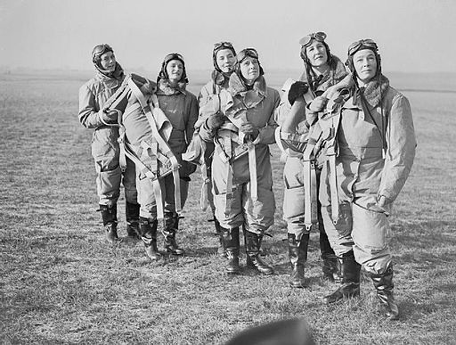

The Women of WW II
Women in the Second World War took on many different roles during the War, including as combatants and workers on the home front. The Second World War involved global conflict on an unprecedented scale; the absolute urgency of mobilizing the entire population made the expansion of the role of women inevitable, although the particular roles varied from country to country. Millions of women of various ages died as a result of the war.
Credit: Wikipedia.

Women pilots of the Air Transport Auxiliary (ATA) in flying kit at Hatfield, 10 January 1940